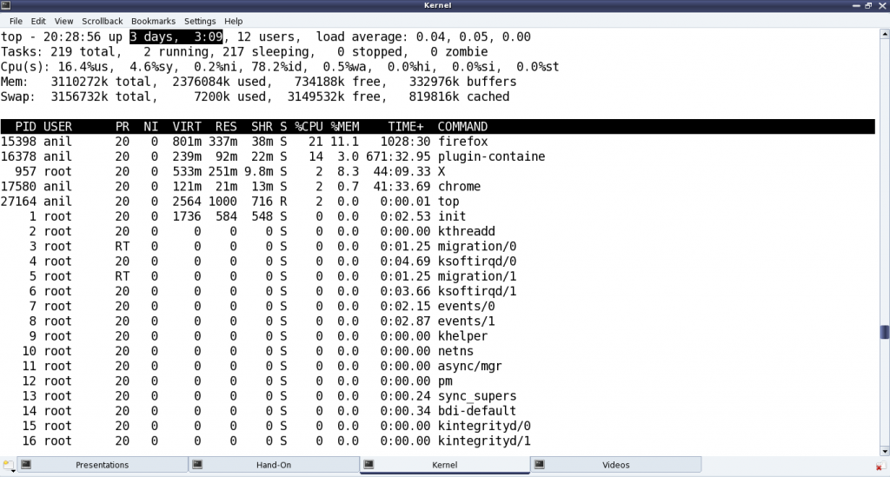

Kernel Window - Peeping through /proc
This sixteenth article, which is part of the series on Linux device drivers, demonstrates the creation and usage of files under the /proc virtual file-system.
Useful kernel windows
After many months, Shweta and Pugs got together for a peaceful technical romancing. All through, we have been using all kinds of kernel windows especially through the /proc virtual file-system (using cat), to help us out in decoding the various nitty-gritties of Linux device drivers. Here’s a non-exhaustive summary listing:
- /proc/modules – Listing of all the dynamically loaded modules
- /proc/devices – Listing of all the registered character and block major numbers
- /proc/iomem – Listing of on-system physical RAM & bus device addresses
- /proc/ioports – Listing of on-system I/O port addresses (specially for x86 systems)
- /proc/interrupts – Listing of all the registered interrupt request numbers
- /proc/softirqs – Listing of all the registered soft irqs
- /proc/kallsyms – Listing of all the running kernel symbols, including from loaded modules
- /proc/partitions – Listing of currently connected block devices & their partitions
- /proc/filesystems – Listing of currently active file-system drivers
- /proc/swaps – Listing of currently active swaps
- /proc/cpuinfo – Information about the CPU(s) on the system
- /proc/meminfo – Information about the memory on the system, viz. RAM, swap, …
Custom kernel windows
“Yes, these have been really helpful in understanding and debugging the Linux device drivers. But is it possible for us to also provide some help? Yes, I mean can we create one such kernel window through /proc?”, questioned Shweta.
“Why one? As many as you want. And that’s simple – just use the right set of APIs and there you go.”
“For you every thing is simple.”
“No yaar, this is seriously simple”, smiled Pugs. “Just watch out, me creating one for you.”
And in jiffies, Pugs created the proc_window.c file below (including the changes, which has taken place in kernel v3.10 and v4.3):
#include <linux/module.h>
#include <linux/kernel.h>
#include <linux/version.h>
#if (LINUX_VERSION_CODE < KERNEL_VERSION(3,10,0))
#else
#include <linux/fs.h>
#include <linux/seq_file.h>
#endif
#include <linux/proc_fs.h>
#include <linux/jiffies.h>
#include <linux/uaccess.h>
#if (LINUX_VERSION_CODE < KERNEL_VERSION(3,10,0))
#define STR_PRINTF_RET(len, str, args...) len += sprintf(page + len, str, ## args)
#elif (LINUX_VERSION_CODE < KERNEL_VERSION(4,3,0))
#define STR_PRINTF_RET(len, str, args...) len += seq_printf(m, str, ## args)
#else
#define STR_PRINTF_RET(len, str, args...) seq_printf(m, str, ## args)
#endif
static struct proc_dir_entry *parent, *file, *link;
static int state = 0;
#if (LINUX_VERSION_CODE < KERNEL_VERSION(3,10,0))
static int time_read(char *page, char **start, off_t off, int count, int *eof,
void *data)
#else
static int time_read(struct seq_file *m, void *v)
#endif
{
int len = 0, val;
unsigned long act_jiffies;
STR_PRINTF_RET(len, "state = %d\n", state);
act_jiffies = jiffies - INITIAL_JIFFIES;
val = jiffies_to_msecs(act_jiffies);
switch (state)
{
case 0:
STR_PRINTF_RET(len, "time = %ld jiffies\n", act_jiffies);
break;
case 1:
STR_PRINTF_RET(len, "time = %d msecs\n", val);
break;
case 2:
STR_PRINTF_RET(len, "time = %ds %dms\n",
val / 1000, val % 1000);
break;
case 3:
val /= 1000;
STR_PRINTF_RET(len, "time = %02d:%02d:%02d\n",
val / 3600, (val / 60) % 60, val % 60);
break;
default:
STR_PRINTF_RET(len, "\n");
break;
}
return len;
}
#if (LINUX_VERSION_CODE < KERNEL_VERSION(3,10,0))
static int time_write(struct file *file, const char __user *buffer,
unsigned long count, void *data)
#else
static ssize_t time_write(struct file *file, const char __user *buffer,
size_t count, loff_t *off)
#endif
{
char kbuf[2];
if (count > 2)
return count;
if (copy_from_user(kbuf, buffer, count))
{
return -EFAULT;
}
if ((count == 2) && (kbuf[1] != '\n'))
return count;
if ((kbuf[0] < '0') || ('9' < kbuf[0]))
return count;
state = kbuf[0] - '0';
return count;
}
#if (LINUX_VERSION_CODE < KERNEL_VERSION(3,10,0))
#else
static int time_open(struct inode *inode, struct file *file)
{
return single_open(file, time_read, NULL);
}
static struct file_operations fops =
{
.owner = THIS_MODULE,
.open = time_open,
.read = seq_read,
.write = time_write
};
#endif
static int __init proc_win_init(void)
{
if ((parent = proc_mkdir("anil", NULL)) == NULL)
{
return -1;
}
#if (LINUX_VERSION_CODE < KERNEL_VERSION(3,10,0))
if ((file = create_proc_entry("rel_time", 0666, parent)) == NULL)
#else
if ((file = proc_create("rel_time", 0666, parent, &fops)) == NULL)
#endif
{
remove_proc_entry("anil", NULL);
return -1;
}
#if (LINUX_VERSION_CODE < KERNEL_VERSION(3,10,0))
file->read_proc = time_read;
file->write_proc = time_write;
#endif
if ((link = proc_symlink("rel_time_l", parent, "rel_time")) == NULL)
{
remove_proc_entry("rel_time", parent);
remove_proc_entry("anil", NULL);
return -1;
}
#if (LINUX_VERSION_CODE < KERNEL_VERSION(3,10,0))
link->uid = 0;
link->gid = 100;
#else
proc_set_user(link, KUIDT_INIT(0), KGIDT_INIT(100));
#endif
return 0;
}
static void __exit proc_win_exit(void)
{
remove_proc_entry("rel_time_l", parent);
remove_proc_entry("rel_time", parent);
remove_proc_entry("anil", NULL);
}
module_init(proc_win_init);
module_exit(proc_win_exit);
MODULE_LICENSE("GPL");
MODULE_AUTHOR("Anil Kumar Pugalia <email@sarika-pugs.com>");
MODULE_DESCRIPTION("Kernel window /proc Demonstration Driver");
And then Pugs did the following steps:
- Built the driver (proc_window.ko file) using the usual driver’s Makefile.
- Loaded the driver using insmod.
- Showed various experiments using the newly created proc windows. (Refer to Figure 28.)
- And finally, unloaded the driver using rmmod.

Demystifying the details
Starting from the constructor proc_win_init(), three proc entries are created:
- Directory anil under
/proc(i.e. NULL parent) with default permissions 0755, usingproc_mkdir() - Regular file rel_time under the above directory anil with permissions 0666, using
create_proc_entry()orproc_create()(since kernel v3.10) - Soft link rel_time_l to the above file rel_time under the same directory anil, using
proc_symlink()
The corresponding removal of these three is achieved using remove_proc_entry() in the destructor proc_win_exit(), in chronological reverse order.
For every entry created under /proc, a corresponding struct proc_dir_entry is created. After which many of its fields could be further updated as needed:
- mode – Permissions of the file
- uid – User ID of the file
- gid – Group ID of the file
Since kernel v3.10, specific API proc_set_user() has been provided to update the uid & gid, instead of directly modifying the fields.
Additionally, for a regular file, the following two function pointers for read and write over the file could be provided, respectively:
int (*read_proc)(char *page, char **start, off_t off, int count, int *eof, void *data)int (*write_proc)(struct file *file, const char __user *buffer, unsigned long count, void *data)
Again, since kernel v3.10, the read & write fields of struct file_operations are to be used respectively, instead of the above two.
write_proc() is very similar to the character device file operation write. And the above code implementation, lets the user to write a digit from 0 to 9, and accordingly sets the internal state.
read_proc() in the above code implementation provides the current state and the time since the system has been booted up in different units based on the current state. These are, jiffies in state 0; milliseconds in state 1; seconds & milliseconds in state 2; hours : minutes : seconds in state 3; and <not implemented> in other states. And to check the computation accuracy, Figure 29 highlights the system up time in the output of top. read_proc()‘s page parameter is a page-sized buffer, typically to be filled up with count bytes from offset off. But more often than not (because of small content), just page is filled up, ignoring all other parameters. Since kernel v3.10, the read logic has to be implemented through something called a sequence file, which is implemented by specifying the pre-defined seq_read() function for the file operation read, and then by providing the above logic in the sequence file’s read function through the file operation open using single_open().

All the /proc related structure definitions and function declarations are available through <linux/proc_fs.h>. The sequence file related stuff (since kernel v3.10) are available through <linux/seq_file.h>. And the jiffies related function declarations and macro definitions are in <linux/jiffies.h>. On a special note, the actual jiffies are being calculated by subtracting INITIAL_JIFFIES, as on boot-up, jiffies is initialized to INITIAL_JIFFIES instead of zero.
Summing up
“Hey Pugs!!! Why did you create the folder named as anil? Who is this Anil? You could have used my name or may be yours.” suggested Shweta. “Ha!! That’s a surprise. My real name is Anil only. It is just that everyone in college knows me only as Pugs”, smiled Pugs. Watch out for further technical romancing of Pugs aka Anil.
Notes
One of the powerful usage of creating our own proc window is for customized debugging by querying. A simple but cool modification of the above driver, could be instead of getting the jiffies, it could read / write hardware registers.